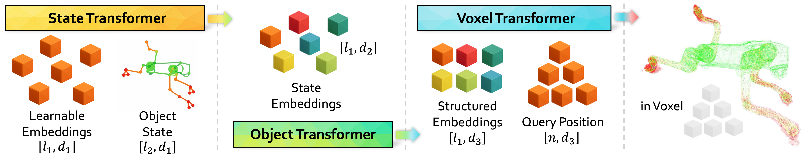

Inspired by the emergent behaviors in large language models that generalized human intelligence, the research community is pursuing similar emergent capabilities within world models, with a emphasis on modeling the physical world. Within the scope of physical world model, objects are the fundamental primitives that constitute physical reality. From humans to computers, nearly everything we interact with is an object. These objects are rarely static; they are actionable entities with varying states determined by their intrinsic properties. While current methods approach object action states either via video generation or dynamic scene reconstruction, none explicitly model this basic element in a unified, principled way to build an actionable object representation.
We propose WorldString, a neural architecture capable of modeling the state manifold of real-world objects by learning directly from point clouds or RGB-D video streams. Serving as a versatile digital twin, it acts as a foundational building block for physical world models; thus, we name it WorldString. Sweetly, its fully differentiable structure seamlessly enables future integration with policy learning and neural dynamics.
Real World Object
Real-world capture in the lab: RGB-D sensing and object-centric processing toward keypoint-conditioned WorldString
training data.
Real-world object capture and processing (lab).
Interactive visualization
Each row has three panels (left to right): input keypoints,
learned token-colored shape, and error map. Drag to rotate, scroll to zoom; pan is disabled. The camera target stays at the
cloud / keypoint center. Use Sync other panels to this view on the keypoint column to mirror
its camera, frame, and play/pause state to the other two panels in that row.
Robot hand
Keypoints (input)
Loading…
Learned token assignment
Loading…
Error map vs. ground truth
Loading…
SMPL football motion (skinning)
Keypoints (input)
Loading…
Learned token assignment
Loading…
Error map vs. ground truth
Loading…
Earphone
Keypoints (input)
Loading…
Learned token assignment
Loading…
Error map vs. ground truth
Loading…
Double stretch (soft / deformable)
Keypoints (input)
Loading…
Learned token assignment
Loading…
Error map vs. ground truth
Loading…
Unitree Go2
Keypoints (input)
Loading…
Learned token assignment
Loading…
Error map vs. ground truth
Loading…
Error map: green — TP · red — FP · blue — FN (red/blue are
softened toward greener tones in the panel for readability). Keypoints are colored by joint index (HSV) and drawn as
shaded spheres; they use the same frame
index as the adjacent shape panels.
Training Process Visualization
Training process visualization for the Go2 and H1 models. Test the saved checkpoints on same keypoint states.
Go2 training process (point cloud)
Loading…
Go2 multi-pose
H1 training process (point cloud)
Loading…
H1 multi-pose
Network architecture
Differentiable three-stage design: State Transformer maps keypoint state to latent geometry,
Object Transformer refines global structure, and Voxel Transformer decodes
occupancy from spatial queries.

Overview of the WorldString pipeline.
Qualitative overview: WorldString models diverse articulated motion from keypoint-conditioned state,
producing structured geometry and point-level predictions.